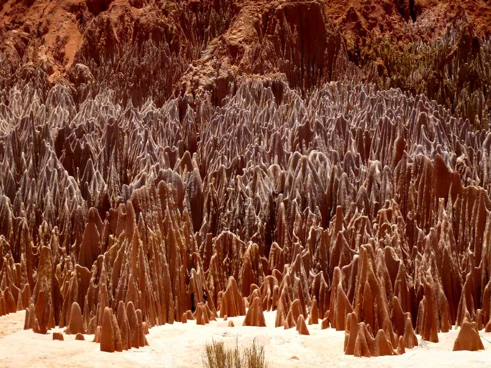
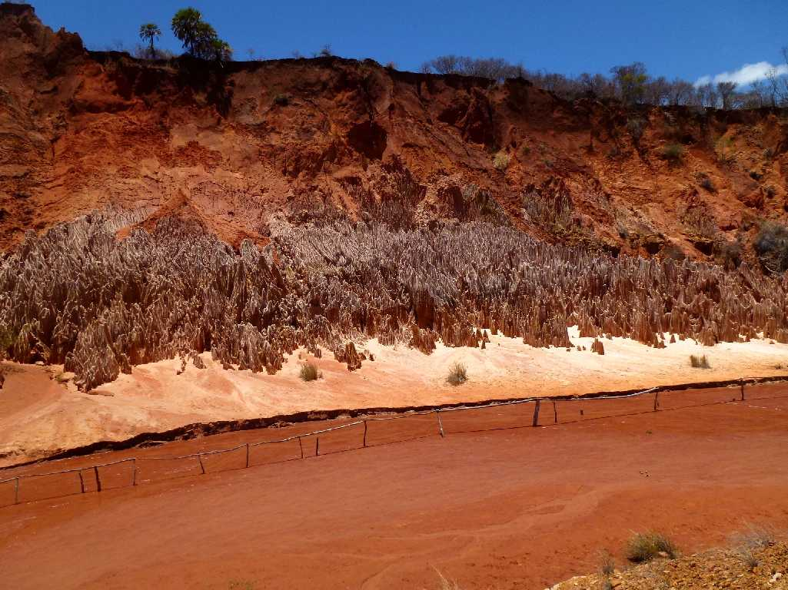
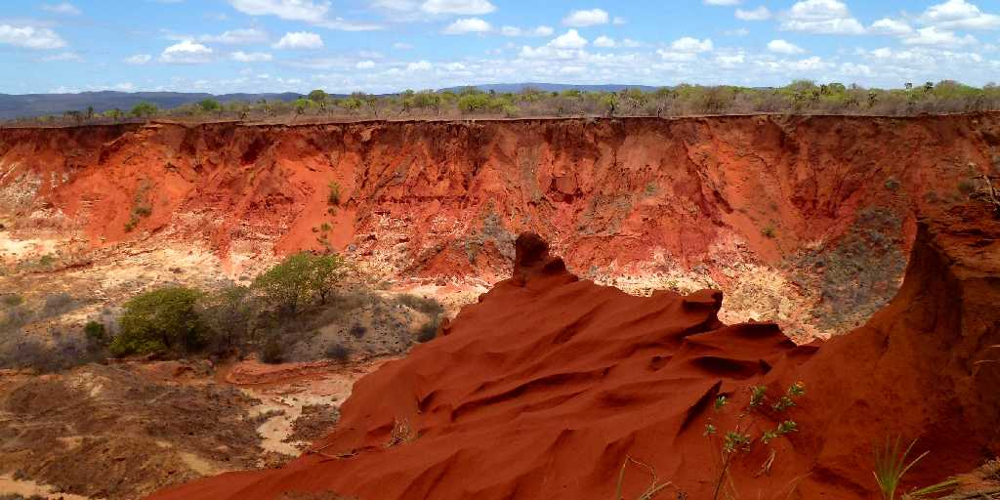
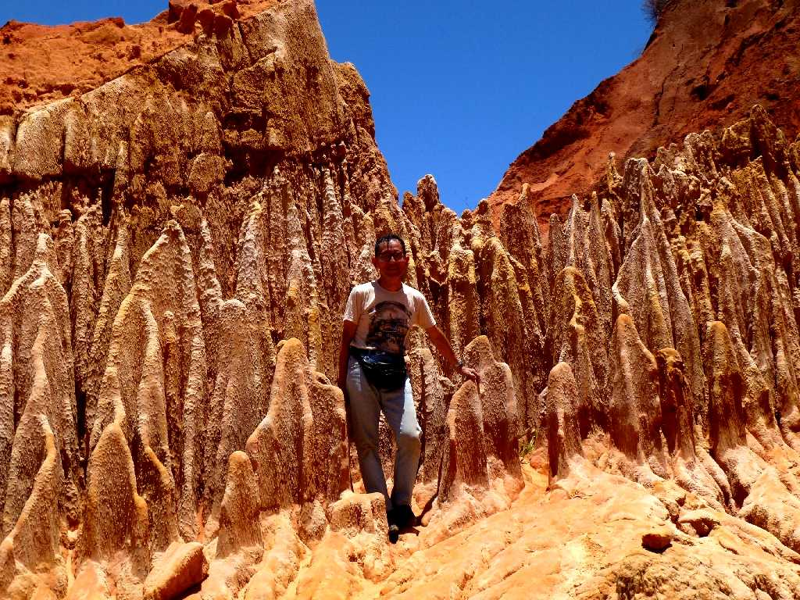
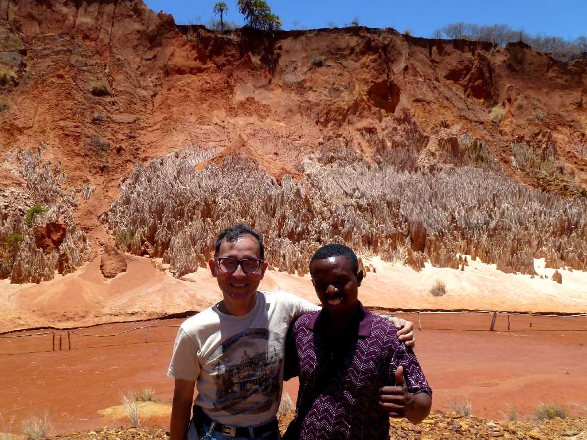

Tsingy Rouges (Red Tsingy)
砂岩 石灰岩 大理石を含む岩に鉄分が混じった赤い岩が数万年を経て風雨に侵食され尖った石柱群を形成したもので赤ツインギーと呼ばれている

River Tsingy Rouges
ツインギーとはマダガスカル語で爪先立ち歩きを意味し転じて先の尖ったを意味する
Valley Tsingy Rouges
侵食された赤ツインギー渓谷の絶景

Valley

October 20 2013 Tsingy Rouges
